Е,
В
UС,
B
I1,
A
I2,
A
I3,
A
Р,
В
e(t1), В
e(t2), В
i1(t1), A
i1(t2), A
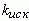
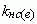
Вычислено
Измерено:
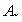
-
-
-
-
-
-
-
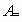
-
-
-
-
-
-
-
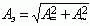
Примечание.  и 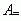 - измеренные переменная и постоянная составляющие ЭДС, напряжения или тока.
и 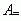 - измеренные переменная и постоянная составляющие ЭДС, напряжения или тока.
Задание 1. Рассчитать однофазную линейную цепь (рис. 16.2) с периодической несинусоидальной ЭДС

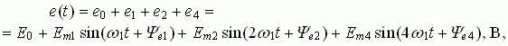
где 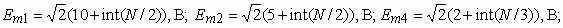
Е0 = 12 В; 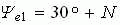, град; 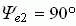; 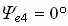; 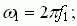 f1 = 50 Гц; R1 = R2 = R = 20 Ом; L = 0,1/N, Гн; С = 250/N, мкФ.
Результаты расчета действующего значения ЭДС Е, напряжения на конденсаторе UС, токов ветвей (I1, I2, I3) занести в табл. 16.1. Найти также мгновенные значения ЭДС е и i1 при t1 = 0 и t2 = 2 мс и занести их в табл. 16.1.
Таблица 16.1
Е, В |
UС, B |
I1, A |
I2, A |
I3, A |
Р, В |
e(t1), В |
e(t2), В |
i1(t1), A |
i1(t2), A |
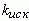 |
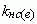 | ||
Вычислено |
|||||||||||||
Измерено: 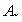 |
- |
- |
- |
- |
- |
- |
- | ||||||
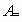 |
- |
- |
- |
- |
- |
- |
- | ||||||
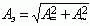 |
|||||||||||||
Примечание. | |||||||||||||